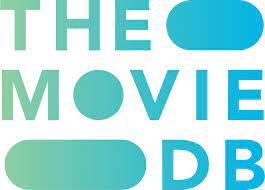

Performed Exploratory analysis using python to explore bikeshare data from three US cities (Chicago, New York City and Washington). Imported Pandas
and Time module for this analysis. Developed a user interactive platform for user to request to view specific statistical information such as the most popular month, day of week, total travel time of rides, etc.

Performed Exploratory analysis using R to explore bikeshare data from three US cities (Chicago, New York City and Washington).
This project contains SQL queries written to query a charity's database for key insights to help meet fundraising objectives for the following year.

Performed Exploratory analysis using python to explore The Movie Database gotten from Kaggle. Data wrangling was perfomed on over 10,800 movies before exploratory analysis was done using pandas, matplotlib and seaborn libraries.